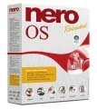

Čím ve Windows vypaluješ CD a DVD? Jestli Nerem, protože je to zřejmě nejlepší vypalovací program, pak si zkusím tipnout, jaké myšlenky tě možná napadají při jeho používání nebo instalaci.
Jak se Nero dostane do počítače? Když pominu případy, kdy ho k PC v akci rovnou přibalí, tak sis jej sehnal buď slušně (60–70 €), nebo zvrhle (crack, serial number, …). Pokud jsi zkoumal jeho instalaci, tak se prodává tuším na celém CD, jestliže ho stahuješ, dobrou chvíli se načekáš. Nero totiž už není jen tím, čím vždycky býval. K pověsti nejlepšího vypalovacího programu na trhu začíná poslední dobou přidávat image operačního systému, v němž si nejen vypálíte DVD, ale také přehrajete hudbu, prohlédnete soubory, namalujete obrázek a ani bych se nedivil, kdyby vám nějaká úžasná super-cool Nero-aplikace umyla nádobí :) .
K věci. Na Neru je hrozné to, kam se ubírá jeho vývoj. Měl to být program na vypalování CD a DVD, ale dnes je z něj obrovský moloch s dvaceti programy, které nikdo nechce a nepoužívá. Když si spustíte samotný program a snažíte se intuitivně najít možnost na smazání RW, stráví s tím člověk sto let a ztratí nervy či jiné části těla. Hlavně že jsou tlačítka oblá a roztomilá… ;)
Stejně jako jsem to v minulosti udělal s velmi oblíbeným programem ACDSee, i s Nerem jsem směřoval ke krátkému procesu – přestat jej krást a poslat jej někam. ACDSee tehdy nahradilo skvělé XnView, které umí přesně tolik věcí, které člověk potřebuje, a je samozřejmě zdarma.
U čeho jsem tedy skončil? CDBurnerXP Pro! Skvělá alternativa pro vypalování CD a DVD. Umí přesně tolik, kolik běžný člověk potřebuje. Zapíše na jakékoliv běžné médium, včetně méně běžných variant DVD, zvládá různé varianty vypalování audio CD, podporuje všechna běžná rozhraní, zvládá práci s ISO obrazy médií, samozřejmě kontroluje vypálená data nebo vytvoří bootovací disk. Údajně umí i ripovat audio CD a stahovat k nim ID3 tagy z internetu, ale to jsem nezkoušel, protože CD neripuji. Prográmek je sympaticky malý, zcela zdarma (žádné reklamy apod.) a je pouze pod Windows.
Doplnění: Audio CD ripuje skvěle, na výběr je WAV, MP3, WMA a OGG, se všemi možnými nastaveními, které si lze představit. ID3 tagy program umí postahovat z FreeDB.
 Kindle
Kindle